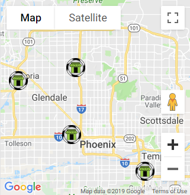

<ion-header>
    <portal-header></portal-header>
</ion-header>
<ion-footer>
    <portal-footer></portal-footer>
</ion-footer>
<ion-content class="menu-items">
    <ion-fab right top style="right:0px;top:0px;background-color: rgba(0,0,0,0.5);">
        <button style="background-color: transparent;font-size: 1.2rem;padding:10px;padding-bottom: 5px;">
            <div style="color:white;">
                <i class="fa fa-user" aria-hidden="true" style="color: rgb(239, 167, 32);"></i><br>
                Register
            </div>
        </button>
        <button style="background-color: transparent;font-size: 1.2rem;padding:10px;padding-bottom: 5px;">
            <div style="color:white;">
                <i class="fa fa-sign-in" aria-hidden="true" style="color: rgb(239, 167, 32);"></i><br>
                Login
            </div>
        </button>
    </ion-fab>
    <div class="control_bar">
        
        
    </div>
    <div class="map_div">
        
        
    </div>
</ion-content>